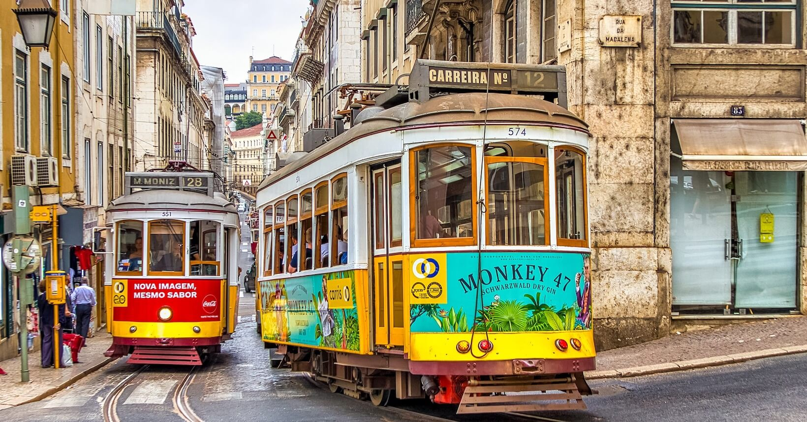
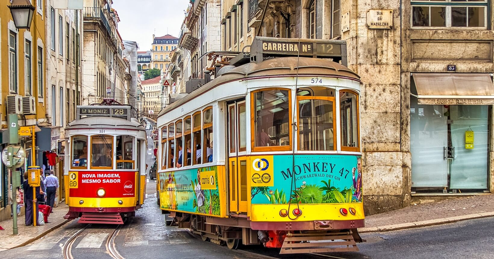

Portugal, um destino para todos
Viajar em Portugal é uma experiência única, marcada por paisagens deslumbrantes e uma rica diversidade cultural. A culinária saborosa, os vinhos de renome e a acolhedora hospitalidade dos portugueses tornam a viagem ainda mais memorável. Além disso, o clima ameno, a segurança e a infraestrutura acessível tornam esse país um destino ideal para viajantes de todas as idades e interesses. Nosso objetivo é guiar todos à uma experiência inesquecível!
 
